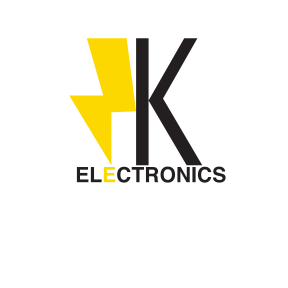
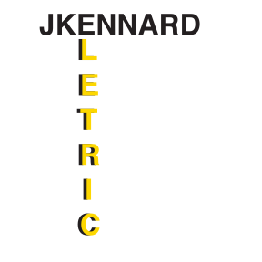

SVG Format Example


About This Image
For this project, we had to come up with three logo designs in Adobe Illustrator. The logos were required to have an element of stylization. I chose to make logos for an electronics company.
Why SVG Format?
Since this was a logo project, SVG was the best Image format since Adobe Illustrator is designed for editing vector graphics. I converted the original AI file to SVG to use one of the logos as a favicon.
Image source: Original photo by Jamal Kennard